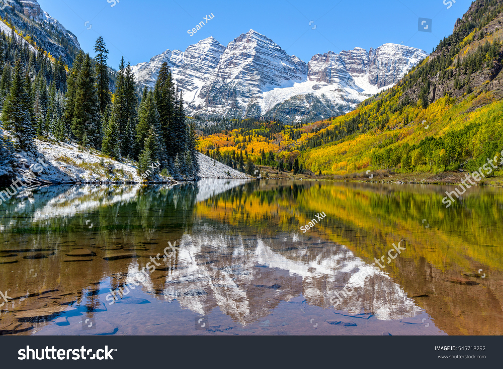

Travel
I travel a lot, and I am extremely grateful for the opportunity to see many places. Among the places I have visited, I liked three a lot: Colorado, Hawaii, and Florida. Firstly, Colorado. I like this state because of its snow, long ski trails, and alpine scenery. The steep slopes, powder snow, and groomed slopes add to the fun of skiing in Colorado. Moving on, Florida captivates me with its warm weather, sandy beaches, and turquoise waters. It is a place I like going to with friends, as we swim in the inviting warm water. It's not just the beaches that interest me; I am also interested in lively cities like Miami, Orlando, and Key West. These cities have a lot of entertainment options, including theme parks like Universal Studios, a variety of cuisine, and a lively atmosphere that keeps the energy levels high. Lastly, Hawaii. I really like Hawaii because of the diverse colors of sand found on its beaches, from golden sands to black sand beaches. The allure doesn't stop there – the waters surrounding Hawaii offer an amazing experience, even surpassing the beauty of Florida. Additionally, the islands have a bunch of great seafood, and the sight of tall volcanoes encircled by rainforest landscapes adds to the unique demeanor of Hawaii.


